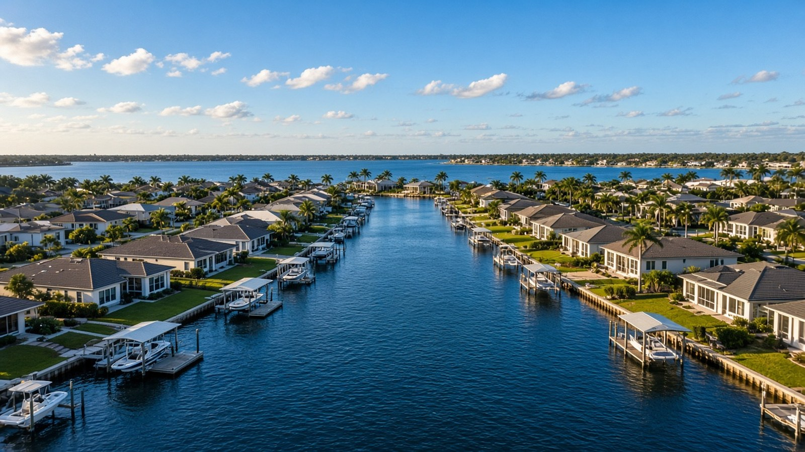

South Gulf Cove: A Local Living Guide

South Gulf Cove, Port Charlotte & Charlotte County, FL
Quick Answer
South Gulf Cove is a canal community behind a boat lock.
South Gulf Cove is a platted waterfront community on the Cape Haze peninsula with more than 55 miles of navigable canals. A county-run lock separates those canals from the tidal Myakka River and Charlotte Harbor, so the questions that matter are lock access, canal depth, and the specific lot, not just the address.
If you are searching for South Gulf Cove homes, start with how you plan to use the water, then look at the individual canal and lot.
What South Gulf Cove actually is
South Gulf Cove sits on the Cape Haze peninsula in Charlotte County, west of the Myakka River. It has a Port Charlotte mailing address, but it is a different product from the older Port Charlotte grid on the other side of the river. General Development Corporation developed it as a waterfront community, and the South Gulf Cove homeowners' association traces its first meeting to November 17, 1978. By 1986 there were only 80 homes in the community, according to the association's own history.
Development slowed in the early 1990s when General Development went into bankruptcy and the community passed to a successor developer. In May 1994 that developer assigned the homeowners' association the right to enforce the deed restrictions. One result is a patchwork: some blocks are well built out, and some canal lots are still waiting for a house. Read our Port Charlotte area page for the wider market, or the dedicated South Gulf Cove and Gulf Cove page for the neighborhood overview.
An engineering firm that surveyed the canals for Charlotte County describes South Gulf Cove as more than 55 miles of navigable canals and over 4,700 waterfront homes and homesites. Those are the largest numbers to hold in your head: this is a big community with a lot of water frontage, and the details change from one canal to the next.
A few facts to put the area in context
South Gulf Cove is not its own census place, so the closest public numbers are for ZIP Code Tabulation Area 33981, which covers the Gulf Cove area. It is an approximation, not a neighborhood boundary, and it may include nearby streets that are not in the HOA. Use it as a sketch of the area, not a verdict on one house. For the bigger picture, start with our Punta Gorda real estate guide.
| South Gulf Cove Area: Context Figures | ||
|---|---|---|
| Topic | Figure | How to read it |
| Area population | 15,622 | U.S. Census Bureau, American Community Survey (ACS) 5-year estimates for 2020-2024, ZIP Code Tabulation Area 33981. |
| Median owner-reported home value | $386,800 | ACS 2020-2024 median value of owner-occupied homes, with a margin of error of about $19,000. This is what owners estimated their homes were worth, not a median sale price. For comparison, the same measure is $269,900 for Port Charlotte as a whole and $328,900 for Charlotte County. |
| Owner-occupied homes | 90.7 percent | ACS 2020-2024 share of occupied housing units that are owner-occupied. Charlotte County overall is 83.8 percent. |
| Median year built | 2001 | ACS 2020-2024. The Port Charlotte median is 1983 and the county median is 1991, so the housing stock here is newer than most of the county. |
| Seasonal housing units | 8.9 percent | Share of all housing units held for seasonal, recreational, or occasional use, ACS 2020-2024. The county overall is 15.7 percent. |
| Median household income | $84,098 | ACS 2020-2024, in 2024 dollars, with a margin of error of about $8,300. |
| Navigable canals | 55+ miles | Reported in an engineering survey of the canal system prepared for Charlotte County, which also set a 4-foot channel depth target at mean low water for about 10.4 miles of main canals. |
| Cape Haze Pioneer Trail | About 8.5 miles | A multi-use trail along a former railway easement on the Cape Haze peninsula, managed by Charlotte County Community Services. The first phase opened on November 20, 1999. |
Sources: U.S. Census Bureau ACS 2020-2024; Charlotte County and its engineering consultant for canal figures; Charlotte County Pioneer Trail brochure. ZIP-level figures are context only, not a substitute for recent comparable sales on a specific canal.
Key Takeaways
- South Gulf Cove has more than 55 miles of navigable canals and over 4,700 waterfront homes and homesites, behind a county-run boat lock.
- The lock controls access to the Myakka River and Charlotte Harbor, and it is separate from the tidal water outside. Ask how a boat gets in and out, and how long the trip takes, before you fall in love with a dock.
- ZIP 33981 has a median year built of 2001, newer than Port Charlotte (1983) and Charlotte County (1991), and 90.7 percent of occupied homes are owner-occupied.
- The ACS 2020-2024 median owner-reported value for the ZIP area is $386,800. It is a survey figure, not a median sale price.
- The community has deed restrictions enforced by the South Gulf Cove homeowners' association. Read them before you write an offer.
- Charlotte County had 2,856 active residential listings on a typical day in October 2026, per Florida Gulf Coast University. That is county inventory, not a South Gulf Cove count.
How the lock changes everything
Most Charlotte County canal communities connect to tidal water through open canals. South Gulf Cove does not. A lock controls boating access to the community's waterway system and protects it from high water levels and tidal influence. Charlotte County Public Works owns and maintains the South Gulf Cove boat lock at 18500 Murdock Circle, and the county publishes operating instructions for boaters.
That has practical consequences. Water level. Inside the lock the canal level is managed, so docks and lifts do not rise and fall with the tide the way they do on open-tidal canals. Time. Every boat trip includes a lock cycle. The county's manual-control instructions describe a leveling step of about 20 seconds and then a full gate opening, and the gates are interlocked so one set cannot open unless the other is closed. Reliability. Because every boat trip depends on the lock, ask Charlotte County Public Works for current status and hours instead of relying on a listing description. The county's lock page also links to a Parallel Locks Project, so ask where that stands too.
Once through the lock you are on the Myakka River, near the mouth of Charlotte Harbor, with the Gulf of Mexico reached through the harbor's passes. For a boater who wants a quiet backyard and a protected boat, the lock is a plus. For a boater who wants to leave on a whim at 6 a.m. for the Gulf, it is a variable you should test on a real trip before you buy.
Canals, depth, and what to check on a specific lot
Canal width and depth vary across the system. The county's engineering survey of the main canals was commissioned because there was no previous hydrographic survey data, and the target channel depth it set was 4 feet at mean low water. That does not mean every canal is that deep. A deeper keel, a bigger lift, or a larger power boat needs a depth conversation specific to the canal your lot sits on, and that is the kind of due diligence we help customers do before an offer.
Confirm these items on any canal-front property: the seawall's condition and who is responsible for it, the dock and lift permits, the bridge or fixed clearances between the lot and the lock, and whether the lot is in a FEMA flood zone. Charlotte County's dock and seawall permit pages explain what the county requires for new work, and an existing structure is only as good as its permit history. If you are comparing waterfront types, our waterfront buying guide explains sailboat access, powerboat access, and the difference between open-tidal and locked canals.
Building new, buying existing, or buying a lot
The median year built of 2001 tells you a lot of the housing is newer than average, which is why many buyers look here for post-2000 construction. It also tells you the opposite: because the neighborhood was platted long before it filled in, there are vacant lots, and building a new home is a real option. Before you buy any lot, check the parcel's zoning and setbacks with Charlotte County Zoning, confirm whether sewer or only septic is available, determine the FEMA flood zone and required finished-floor elevation, and order a signed and sealed survey. Charlotte County's single-family permit checklist walks through these steps. Our guide to buying land in Punta Gorda covers the same checklist in more detail.
If you are buying an existing home, apply the usual inspection items and add the water items: seawall, dock, lift, and the boat's route to the lock. Newer construction is not a substitute for those checks.
Living here day to day
The neighborhood is residential and mostly low-rise, with the Cape Haze Pioneer Trail nearby for walking and biking. The trail runs about 8.5 miles along a former railway easement parallel to County Road 771, also called Gasparilla Road. It is a genuine daily-use amenity for cyclists and walkers, and it is one reason some buyers choose the Cape Haze side of the river.
Insurance, flood zone, and wind mitigation belong in the first conversation. Hurricane Ian made landfall on September 28, 2022, first on Cayo Costa and then near Punta Gorda, according to the National Hurricane Center's final report. Charley, in 2004, came ashore in the same area. Those facts do not tell you what a particular house will cost to insure. They do mean you should get a quote early, ask for the roof age, and check the flood map before you commit to a dock.
If the home will be your primary residence, ask the Charlotte County Property Appraiser about Florida's homestead exemption. The state's exemption is up to $50,000 of assessed value, with the first $25,000 applying to all property taxes, and Save Our Homes limits annual assessed-value increases to the lesser of 3 percent or the change in the Consumer Price Index, which is 2.7 percent for 2026. You must own and live in the home as your permanent residence on January 1 and apply by March 1.
What the price data can and cannot tell you
Buyers want one number for South Gulf Cove. This guide does not give you one, because a lock-access canal lot and a non-canal street can sit a few blocks apart and price very differently. The table above is the public snapshot we can stand behind. The FHFA house-price index for the Punta Gorda metro area, which covers Charlotte County, was 391.34 in the second quarter of 2026, down 0.2 percent from a year earlier and 7.7 percent below the second quarter of 2024. That is a repeat-transaction index for the whole metro area, not a South Gulf Cove sale price.
Ask for recent comparable sales with the same water access, canal width, lift setup, and year built. Sellers can start with a home valuation, and buyers can see how the team works on the buyers page.
Frequently asked questions
Is South Gulf Cove part of Port Charlotte?
South Gulf Cove has a Port Charlotte mailing address and sits in unincorporated Charlotte County, but it is on the Cape Haze peninsula, west of the Myakka River. The older Port Charlotte grid is on the other side. Look at the Port Charlotte area page for the larger market.
Does South Gulf Cove have Gulf access?
Boats leave the community through a county-run lock into the Myakka River and Charlotte Harbor, and the Gulf of Mexico is reached through the harbor's passes. Ask for the current lock status and hours from Charlotte County Public Works, and plan the trip for the boat you actually own.
Who owns and runs the South Gulf Cove boat lock?
Charlotte County Public Works maintains the lock at 18500 Murdock Circle in Port Charlotte. Report problems to the county's Public Works office at 941-575-3600.
Are South Gulf Cove homes newer than the rest of Port Charlotte?
The ACS 2020-2024 median year built for ZIP 33981 is 2001, compared with 1983 for Port Charlotte as a whole and 1991 for Charlotte County. That is an average, so you will still find older homes mixed in.
Is there a homeowners' association?
Yes. The South Gulf Cove homeowners' association has the right to enforce the community's deed restrictions, which a former developer assigned to it in 1994. Request the current restrictions and any fee schedule before you make an offer.
How deep are the South Gulf Cove canals?
Depth varies by canal. A county engineering survey set a target channel depth of 4 feet at mean low water for the main canals it studied. Ask for depth information for the specific canal your lot is on, especially if you own a sailboat or a larger powerboat.
Can I build on a vacant lot in South Gulf Cove?
Many buyers do, but each parcel is different. Confirm zoning and setbacks with Charlotte County Zoning, ask whether sewer or septic applies, check the FEMA flood zone and finished-floor requirement, and order a signed and sealed survey before you close.
Talk with The Helgemo Team
If you are weighing South Gulf Cove against other Charlotte County waterfront communities, talk with a team that knows the lock, the canals, and the lots in person. Call or text The Helgemo Team at (941) 770-2275, or visit the contact page. The office is at 320 Cross Street, Punta Gorda, Florida 33950. You can also meet Brian Helgemo or read more about the team.
Related Reading
- South Gulf Cove and Gulf Cove area page
- Port Charlotte real estate, explained
- A guide to buying a waterfront home in Punta Gorda
- Buying vacant land in Punta Gorda
- A Local Guide to Punta Gorda Real Estate
Thinking About Buying or Selling?
If you are buying, selling, or just trying to understand a canal community, talk with a team that works this market in person. Call or text The Helgemo Team at (941) 770-2275.
Sources: U.S. Census Bureau, American Community Survey 2020-2024 estimates for ZIP Code Tabulation Area 33981, via Census Reporter; U.S. Census Bureau, American Community Survey 2020-2024 estimates for Port Charlotte CDP, via Census Reporter; U.S. Census Bureau, American Community Survey 2020-2024 estimates for Charlotte County, via Census Reporter; South Gulf Cove HOA, community history; Charlotte County, South Gulf Cove Boat Lock; WGI, South Gulf Cove Canals Multibeam Survey for Charlotte County; Charlotte County, Cape Haze Pioneer Trail brochure; Charlotte County, Residential Single Family permits; Charlotte County, Residential Dock permits; National Hurricane Center, Tropical Cyclone Report: Hurricane Ian; National Hurricane Center, Tropical Cyclone Report: Hurricane Charley; Florida Department of Revenue, Property Tax Information for Homestead Exemption; Florida Department of Revenue, Save Our Homes; Federal Housing Finance Agency all-transactions House Price Index, Punta Gorda, FL metropolitan area, Q2 2026; Florida Gulf Coast University Regional Economic Research Institute, Charlotte County active residential listings, October 2026. ZIP-level, metro, and county figures are context only, not a substitute for recent comparable sales on a specific property. Data and sources reviewed November 10, 2026.